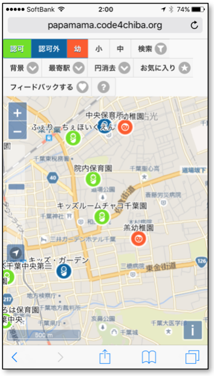
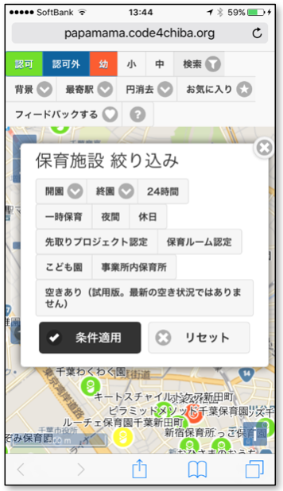
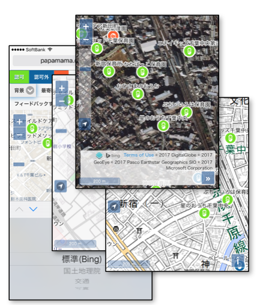
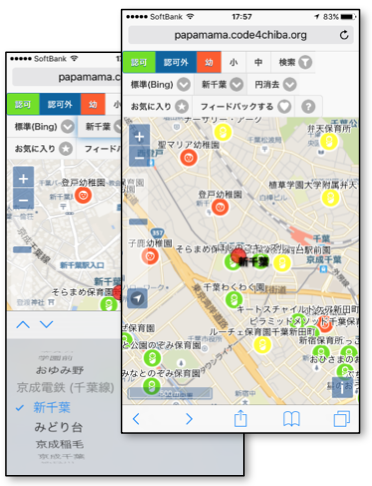
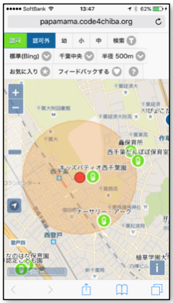
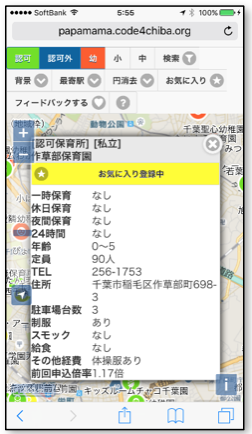
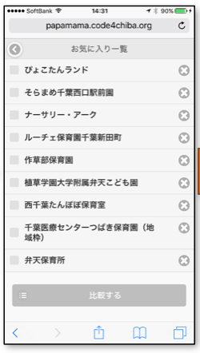
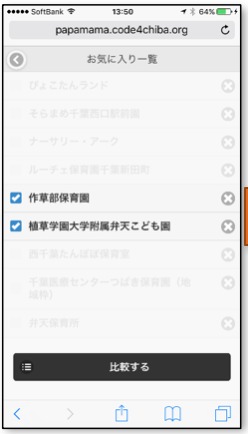
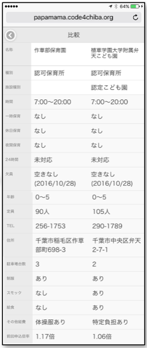
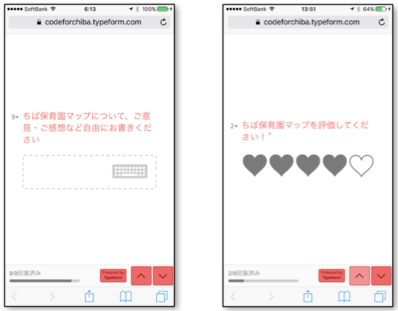

Close
保育園（認可保育所、認可外保育所）、幼稚園を地図に表示をしました。
少子化と言われている昨今において、未就学児をお持ちの親御さんには、「子どもを正しく育てる」「安心して仕事ができる」ようにお子様に合った保育施設を選択していただきたいと思います。 実際に保育施設を選ぶ際には 入所選考基準だけでなく、所在地や費用などいろいろな情報を元に候補をピックアップし、実際に足を運んで見学をしたうえで決定をするのが一般的です。 千葉保育園マップは「見学に行く保育施設を見つける」ことを目標に開発をしました。
千葉市保育園マップについて
少子化と言われている昨今において、未就学児をお持ちの親御さんには、「子どもを正しく育てる」「安心して仕事ができる」ようにお子様に合った保育施設を選択していただきたいと思います。 実際に保育施設を選ぶ際には 入所選考基準だけでなく、所在地や費用などいろいろな情報を元に候補をピックアップし、実際に足を運んで見学をしたうえで決定をするのが一般的です。 千葉保育園マップは「見学に行く保育施設を見つける」ことを目標に開発をしました。
保育園マップメニュー

| 項目 | 説明 |
|---|---|
| 認可 | 認可保育所を表示/非表示にします。 |
| 認可外 | 認可外保育所を表示/非表示にします。 |
| 幼 | 幼稚園を表示/非表示にします。 |
| 小 | 小学校と小学校の学区を表示/非表示にします。 |
| 中 | 中学校と中学校の学区を表示/非表示にします。 |
| 検索 | 保育施設の条件を絞り込んで検索することができます。 |
| 背景地図 | 背景の地図を選択することができます。 |
| 最寄駅 | 指定したJR・私鉄の駅を地図上の中心に表示します。 |
| 円表示 | 指定した距離を半径とする円を地図上に表示することができます。 |
| フィードバックする | 「千葉市保育園マップ」について意見を入力できます。 |
- 認可保育園
- 認可外保育園
- 幼稚園
-
 お気に入り登録時
お気に入り登録時
絞り込み検索

| 項目 | 説明 |
|---|---|
| 開園 | 開園する時間を指定します。 |
| 終園 | 終園する時間を指定します。 |
| 24時間 | 24時間保育をしている保育所を指定します。 |
| 一時保育 | 一時保育をしている保育所を指定します。 |
| 夜間 | 夜間保育をしている保育所を指定します。 |
| 先取りプロジェクト認定 | 「先取りプロジェクト」認定を受けている認可外保育所を指定します。 |
| 保育ルーム認定 | 「保育ルーム」認定を受けている認可外保育所を指定します。 |
| こども園 | 「認定こども園」を指定します。 ※認定こども園は保育園の一形態として扱います。 |
| 事業所内保育所 | 「事業所内保育所」を指定します。 |
| 空きあり | 現在、空きのある保育所を指定します。 ※データが最新でない可能性があるため試用版とします。 |
| 条件適用 | 絞り込み条件を適用して検索をします。 |
| リセット | 絞り込み条件をリセットします。 |
地図表示
背景地図を選択

地図（Bing）／国土地理院／電車（OSM）／航空写真（Bing）から選択ができます。
駅を地図の中心に表示

JR・私鉄の駅を指定すると、地図上にその駅が表示され駅が中心になります。
距離円を表示

距離を指定すると、その距離を半径とする円が表示されます。
お気に入り・比較

地図上の保育所をタップしポップアップから「お気に入り登録する」を選択します。

メニューの「お気に入り」を選択するとお気に入りの一覧が表示されます。

比較したい保育所を2ヶ所選択をします。

選択した保育所の詳細情報を比較することができます。
フィードバック

メニューから「フィードバックする」を選択すると別画面にアンケートフォームが表示されます。
全部で9問ありますが、今後のサービス改善のためにご意見をいただきますようお願いいたします。
全部で9問ありますが、今後のサービス改善のためにご意見をいただきますようお願いいたします。
ご利用上のご注意
「千葉市保育園マップ」は、千葉市が提供するオープンデータを元に、Code for Chibaが提供しています。
保育所などのデータについては千葉市の職員の方々、サービスはCode for Chibaのメンバーが極力間違いがないようにしておりますが、瑕疵（かし）やバグがないことは保証しておりません。
もしデータの間違いやバグなどにお気づきの際はメニューの「フィードバックする」からお伝えいただけると幸いです。
また、利用者の方々にはあらかじめ通知することなくサービスの内容や仕様を変更したり、提供を停止したり中止したりする場合がありますがご了承ください。
「千葉市保育園マップ」は、Code for Sapporo の開発したさっぽろ保育園マップを母体として開発されました。
詳しくはこちら
保育所などのデータについては千葉市の職員の方々、サービスはCode for Chibaのメンバーが極力間違いがないようにしておりますが、瑕疵（かし）やバグがないことは保証しておりません。
もしデータの間違いやバグなどにお気づきの際はメニューの「フィードバックする」からお伝えいただけると幸いです。
また、利用者の方々にはあらかじめ通知することなくサービスの内容や仕様を変更したり、提供を停止したり中止したりする場合がありますがご了承ください。
「千葉市保育園マップ」は、Code for Sapporo の開発したさっぽろ保育園マップを母体として開発されました。
詳しくはこちら